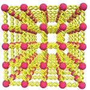

Before we get to the good stuff we have to become familiar with some basic properties of materials, fluids and gases. Try to keep in mind the “bed spring” model of a solid and connect with our discussions of simple harmonics motion while we go.

The image to picture, for solids, is one like that shown here. Imagine an ordered array of little balls connected by springs. If I push on the springs they squish. At all times the little spheres are in motion. They are forever vibrating. Even at absolute zero the balls are moving, just a little bit. This may seem strange but we will talk more on this when we get to quantum mechanics, later. When I heat the system they vibrate even more. As I cool it they vibrate less.
Later as we talk about liquids, imagine the crowd of people constantly jostling one another. The effect is the same. If I put people in a hot room they want to have a little more room. They start moving a little faster they want to spread out. As they cool they contract.
Gasses are even more exciting. The individual molecules or atoms are flying about at terrific speed. When they hit a wall they can pick up some energy from the vibrating walls (momentum transfer). As with any impulse they can also impart some momentum. We see the net effect as pressure. They, too, expand when heated and contract when cooled.